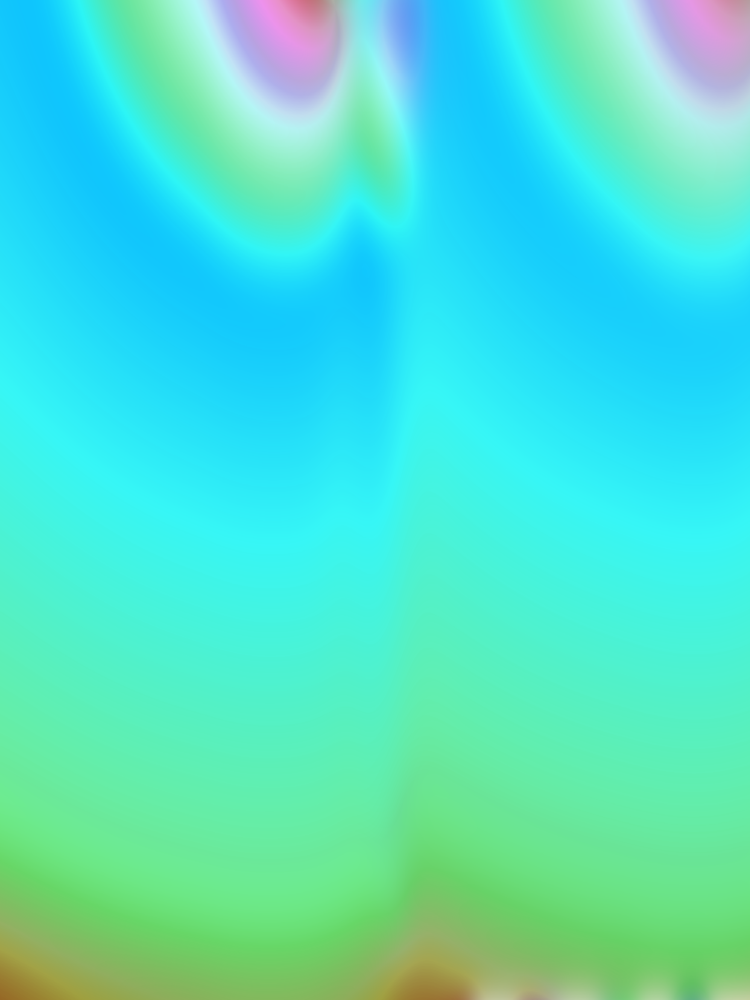

Paola Silva Lizárraga is a Rhizome Microgrant recipient, an artist-in-residence at the SVA RisoLAB, a Tufts Summer Scholar, and
a graduate from the School of the Museum of Fine Arts at Tufts University
For most of my life, I lived in Tijuana, Mexico, at the border with the United States. There was the possibility we would move to America, and it seemed to get closer every year. Crossing the border to San Diego every weekend, the United States became synonymous with toy aisles, DVD bins, and Payless shoes: to go to America was to go to the mall.To shop like an American was important to me. I wanted to be American so bad. As much as the shopping mall was its own world, the world wide web was another, and through them my hope was to de-Mexicanize.
You must understand that the internet felt like a real place. Because it was: it was my tool for globalization.The internet was a promise: that we could become American, that we could be full resolution. When my family finally moved to Santa Ana, California, my dream revealed to be phony. Not only was I not American, I never would be. My wish is to let you into the world of two Paos, cross-eyed: the past Pao venerating plastic, and cuteness, the cynical Pao whispering that it's all hideous. Somewhere in between there is a truth I still can't write down. And it's all a little pixelated.
Awards
2026 YoungArts Microgrant
2026 SVA RisoLAB Artist-in-Residence, Upcoming
2025 Rhizome Microgrant
2025 Tufts University Summer Scholars Research Grant
2025 YoungArts Microgrant
2024 "Best Animation" School of the Museum of Fine Arts Media Arts Annual
2023 School of the Museum of Fine Arts Dean's Research Award
Group shows & publications
2026 kuš! comics Anthology GEN-Z, issue #60
2026 Facebook Marketplace GalleryBrooklyn, NY
2026 Sleeper in Metropolis Gallery 198, Brooklyn, NY
2026 Artifact Not That Deep Gallery, Brooklyn, NY
2026 Benefit film screening for Illinois Coalition for Immigrant and Refugee Rights, No Nation Art Lab, Chicago, IL
2026 Recession Indicators Medford, MA
2026 never seen before Allston, MA, Co-curator
2025 Everything looks good on paper Mission Hill Gallery, Boston, MA
2025 Wear and Tear Bowery Art Collective, Metuchen, NJ
2025 UNFIXED the Well Gallery, Boston, MA
2025 CyberFrames Boston CyberArts Museum, Boston, MA
2025 The Self Imagined Carol Schlosberg Alumni Gallery, Beverly, MA
2025 RE:boot Boston CyberArts Museum, Boston, MA
2024 FAVES Mission Hill Gallery, Boston, MA
Other Experience
2026 Starface World Campaign
2026 Multiple Formats Book Fair
2025 Printed Matter New York Art Book Fair
2024 Animation Freelance Work, Reggie Pearl album MEGAPEARL
